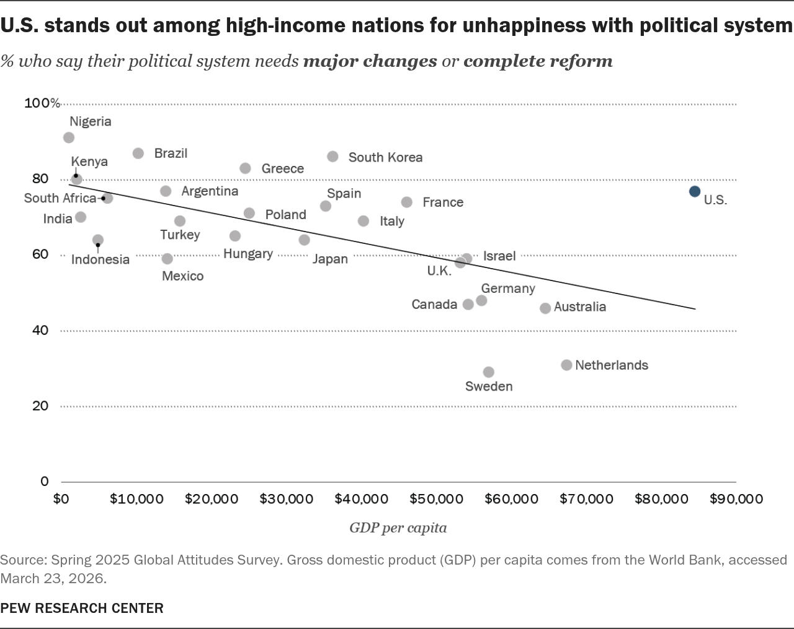

Exercise Summary
For this exercise, I selected an existing data visualisation from Pew Research Center and turned it into a multivariate visualisation. The original visualisation compared GDP per capita with the percentage of adults across 25 countries who said that their political system needed major changes or complete reform.
I first reproduced the original visualisation while making a few accessibility and publication-readiness improvements. I then added population as an additional variable using data from the United Nations World Population Prospects 2024 dataset. As for why I decided on adding population as the additional variable, I was interested to see whether there was a relationship between larger populations and unhappiness with their political system, as well as a relationship between population and GDP per capita.
Original Visualisation
The original visualisation was published by Pew Research Center and compares GDP per capita with the percentage of adults who say that their political system needs major changes or complete reform across 25 countries.

My Reproduction
Before adding another variable, I reproduced the original visualisation in Python. During this process, I also made several changes to improve its accessibility and presentation.
- I made the text colour darker to ensure a 4.5:1 text-to-background contrast ratio.
- I made the bubble colours darker to ensure a 3:1 element-to-background contrast ratio.
- I made minor grammatical improvements to ensure the title and subtitle are both proper sentences.

Make it Multivariate!
The results were quite interesting; some of the larger population countries had significantly lower GDP per capita and a larger percentage of unhappiness toward their political system than smaller populations. However, the U.S. remains the clearest outlier, with a relatively large population, the highest GDP per capita, and almost an 80% unhappiness toward their political system. I believe that adding population was a justified, and meaningful choice, that provides the audience with another story told through data.
- I made the text colour darker to ensure a 4.5:1 text-to-background contrast ratio.
- I made the bubble colours darker to ensure a 3:1 element-to-background contrast ratio.
- I made minor grammatical improvements to ensure the title and subtitle are both proper sentences.
- The bubbles are sized in relation to each country's population size, as to perhaps reveal a relationship between population size and unhappiness with the political system.
- A legend for bubble size was added in the bottom-left corner.
- I added the United Nations World Population Prospects 2024 to the source information because its population data were incorporated into the visualisation.

Data Card
The following data card summarises the data, sources and visual mappings used to create my multivariate visualisation.
| Title |
U.S. stands out among
high-income nations for
unhappiness with political
system.
% who say their political system needs major changes or complete reform. |
|---|---|
| Summary |
This multivariate visualisation shows the comparison of unhappiness towards political systems, GDP per capita, and population across 25 countries. Each country is represented by a bubble sized by its population and is directly labelled, and a trend line is included to show the relationship between GDP per capita and unhappiness towards political systems across the displayed countries. The visualisation was inspired by Pew Research Center’s ‘U.S. stands out among high-income nations for unhappiness with political system’, and it was extended into a multivariate design by including population data from the United Nations World Population Prospects (2024 Revision). |
| Data Source |
Pew Research Center. (2026, March 7). U.S. stands out among high-income nations for unhappiness with political system [Data set]. https://www.pewresearch.org/chart/__trashed-17/ Pew Research Center. (2025). Spring 2025 Survey Data [Data set]. https://www.pewresearch.org/dataset/spring-2025-survey-data/ United Nations, Department of Economic and Social Affairs, Population Division. (2024). World Population Prospects 2024 [Data set]. https://population.un.org/wpp/ |
| Mapping |
|
| Important Notes |
Pew Research Center
United Nations
|
| Access |
|